Eurocentric history books would have you believe the Greeks and Romans invented the clay oil lamp, with a design that gradually progressed as civilization advanced. However, the Chinese were refining crude oil for use in lamps and house heating around 2000 BC [4], while the people of the Mediterranean were putting up with clumsy open saucer lamps. No surprise really, these early civilizations are descendents of the technically competent Noah. The Chinese remembered some things, others forgot.
The humble oil lamp [2] was basically a clay pot with a spout for a wick and a separate hole to feed the oil and improve the airflow. The use of oil lamps is confirmed in Crete at the age of Mycenaean civilization. It appears the more ancient did not have covers, something like this saucer oil lamp circa 1500 BC. This is very simply made on a wheel by throwing a bowl and then pinching it to form the spout to hold the wick.
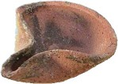
A potter's wheel is hardly necessary. This terracotta replica was done freehand in about 10 minutes.
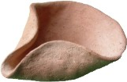
Later, so the story goes, this shape progressed to a covered bowl, with a spout for the wick. This reduced contamination and spillage. Handles were often added, and holes for ventilation, such as the Roman style lamp below.
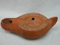
IMAGE: http://www.ancientlamp.com/index.html
For lighting on board Noah's Ark, we are not restricted to Mediterranean technology however. More ancient 'dates' are ascribed to oriental lamps such as this design from Thailand. This wheel thrown design makes a bit more sense (assuming we don't have the mold casting methods employed by the Romans for mass production of oil lamps). The Chinese are reputed to have been refining crude oil for lamps around 2000 BC. [4]. This makes the Mediterranean oil lamp story look a bit silly. Noah is certainly not limited to the open saucer lamp design. From a Chinese perspective, these barbarians simply forgot how to make oil lamps.
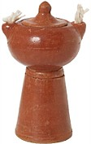
IMAGE: http://www.natashascafe.com/html/oilamp.html
|
I made a quick unglazed terracotta lamp. It's pretty rough and not really the typical ancient design because the fill hole is not in the middle; a central fill hole is superior for spill avoidance of course. Also I did not include a handle on the opposite side to the flame, another standard feature of the typical ancient oil lamp. It was bisque fired at 1050 C. |
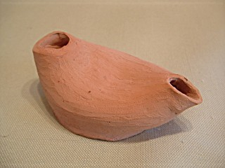 |
|
To make a wick, an old tea-towel (100% cotton) should do. Cut off a strip around 20mm x 100mm (3/4" x 4") Cotton is easy to find. You could probably use manila rope too. Just avoid plastic. |
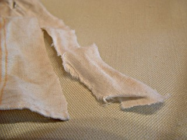 |
|
Twist it up and fit the wick into the spout. Pretty high-tech eh? |
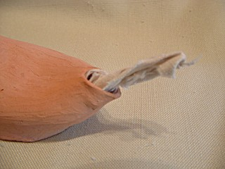 |
|
Fill with olive oil. A little oil goes a long way. Most fuels have pretty similar calorific value (energy content), so oil will last like a candle. This small lamp should easily last several hours (depending on the flame size). That's cheaper than batteries. Lamps like these could easily run all night and provide a permanent flame. Luke 12:35 It appears this was exactly what they did once. [3] |
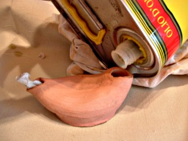 |
|
Whoops. Overfilled it while trying to take a photo... Anyway, you need the wick fully soaked. Olive oil makes an excellent fuel as it has a high flash point. (It does not catch fire too easily) [1] |
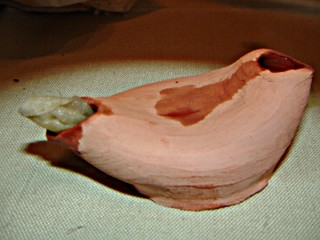 |
|
It should be easy to light if oil has soaked right up the wick. The interesting thing about olive oil is that is won't burn except on the wick. I couldn't get the oil to light in a pool on the ground for example. Olive oil seems to be inherently safe in this respect - no flammability problems. If the lamp is kicked over it either carries on as before of goes out. By tilting the lamp, oil can even drip from the wick without burning. |
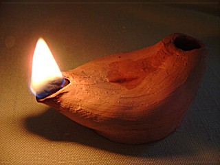 |
|
To increase the flame just pull out the wick. It is definitely better than a candle in the wind, and better for walking. The smoke from olive oil doesn't sting the eyes, but it does make a little soot when the flame is large. Probably an air supply issue. [5] |
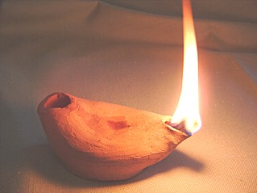 |
|
The open (saucer) style lamp was no different. Cotton rope was used as a wick here. The thickness of the oil has a bearing on how high it will reach by capillary action. Here, the lamp had to be tilted forward to keep the wick saturated. So the wick needs to be kept low. However, after a few experiments one might find a suitable wick and the right oil consistency. |
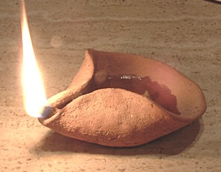 |
Combining elements of lamp design from the early post Babel civilizations of Egypt, Babylon, China, India etc, the original oil lamp may have been hand thrown on a wheel. Pinching the top together naturally forms a double spout, then a hole through the mid seam to hang the lamp. This is perhaps the quickest way to make an enclosed lamp without using molds, and can be made in any size. Reminiscent of the known ancient lamps but not restricted to any one line of development after the flood, this design is perhaps as good a guess as we could make for Noah's Ark.
|
Hand thrown then pinched like an early Mediterranean lamp, but starting with a deeper bowl shape to form a double spout like the Thailand lamp. Terracotta hand thrown lamp. Approx time to build 20 mins. Quantity required for Noah's Ark 50 (Various sizes, allowing for breakage etc). Labor 3 days (including firing etc). It turns out the spout was set too high (oil has trouble reaching the top of the wick). Try a gain with a lower design. |
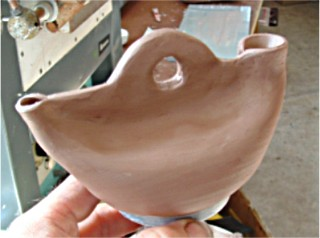 |
A typical ancient clay lamp is very suitable for a personal light on board Noah's Ark. It does not present a fire hazard. If a fire did start you should have several ceramic water feeders handy. Common sense would dictate the lamps would not be left unattended next to a bail of straw. The animals shouldn't need the light of a lamp anyway, it is only for Noah and the crew to see what they are doing - at night or in the depths of the bottom level.
The design of Noah's oil lamp does not have to be restricted to the shallow open bowl, alleged ancestor to the enclosed Greek lamp. Oriental technology might have kept the best of Babel lighting know-how, like they did with some other things. But clay is certainly the ideal material and olive oil the ideal fuel. Lighting is not a problem. Taking design elements from the early post Babel civilizations around the world, Noah's lamp may have been a hand thrown pinched bowl forming an enclosed vessel with a double spout.
1. Virgin olive oils have a higher flash point (the point where it bursts into flames) than other seed oils. Virgin olive oils have a flash point around 410 - 428 F (210 - 220 C), while most seed oils begin to burn at 374 - 392 F (190 - 200 C). http://cesonoma.ucdavis.edu/HORTIC/iocc_standards_purity_grade.pdf . Also http://food.oregonstate.edu/l/olive.html Return to text
2. Lamps in antiquity. http://www.materialculture.org/ancientlamps/ Return to text
3. Ancient oil lamps. (Martin and Boughman Antiquities Collection) "It was the responsibility of the woman of the house to keep the lamp burning day and night. Between trimming the wick and filling the lamp, it seems reasonable to assume that these duties would be done several times per night." http://www.biblehistory.com/lamps/lamps.html Return to text
4. 2000 B.C. The Chinese refined crude oil for use in lamps and in heating homes. http://www.eia.doe.gov/kids/history/timelines/petroleum.html Return to text
5. Ancient Egyptian Masonry, Clarke, Somers & Engelbach, Reginald; London 1930, P. 201
"Many visitors to the monuments express surprise that the painting could have been carried out in the darkness of the tombs and in the dim light of the temples. The Egyptian lamp was of the simplest type, merely a wick floating in oil. It is not infrequently represented in the scenes in the tombs, where it usually takes the form of an open receptacle mounted on a tall foot which, in the smaller examples, can be grasped in the hand. In the pictures, there arise from the receptacle what we may assume to be wicks or flames, always curved over the top as if blown by a current of air. Stand lamps in limestone have been found in the pyramid of El-Lahun, and representations of them in stone in the 'Labrinth' at Hawara. In Egyptian houses, small dishes were also used as lamps. They usually have their rims pinched into a spout ... The absence of smoke-blackening in the tombs of the kings is also no difficult explanation. If olive-oil is used, there is very little smoke, and a suitable covering over the lamp, for which various methods readily suggest themselves, would very easily prevent carbon being deposited on the ceiling.">